Each of the comic book pages indicates 4 humorous (I hope!) contrived scenes based on imagery from games in the Final Fantasy series. In each panel, the character Sephiroth from Final Fantasy VII has been added. All the text bubbles that are spoken by Sephiroth include a word that is related to the Kabbalistic Sefirot. This is where the name "Sephiroth" derives from. To help you get on the right track, the first letters of the titles of the images, when ordered by the numerical order of the games depicted, spell SEPHIROTHS BOOK, which is a translation of the puzzle title, as Safer Sephiroth means "book of Sephiroth" in Hebrew. Searching for this will yield information about the ten Sefirot, which is confirmed by the text in the only panel in the puzzle to mention books. A further hint in the same panel suggests a way to proceed: by identifying the right words and tracing paths. The relevant words and the corresponding Sefirot are.
Sefirah Cluing words ----------------------- Keter Crown, crowning Hokhmah Wise, wisdom Binah Understand, understood, understanding Hesed Kind, kindly, kindness Gevurah Strength, strong Netzach Victory, victor, victorious Tiferet Beauty, beautiful Hod Majesty, majestic Yesod Foundation, foundational Malkhut King, kingdom
When these words are in the correct order (right to left, top to bottom) and plotted on the Kabbalistic Tree of Life, an English letter is traced out. Arranging in order of Final Fantasy number (from I to XIV) gives the phrase JEWISH HOLY TEXT, which clues the answer, TORAH.
In detail:
Solution for FF1Sunken Shrine | ||
Cluing words ----------------- Majesty Foundations Victorious Wise(-guy) |
Sephirot --------- Hod Yesod Netzach Hokhmah |
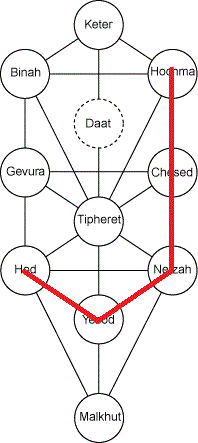 |
Solution for FF2Enemy of the Empire | ||
Cluing words ----------------- Kind Strength Majesty Victory Majesty Understand Wise |
Sephirot --------- Chesed Gevurah Hod Netzach Hod Binah Hokhmah |
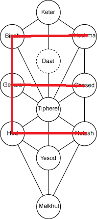 |
Solution for FF3Power Crystals | ||
Cluing words ----------------- Wisdom Victor Beautiful Majestic Understood |
Sephirot --------- Hokhmah Netzach Tiferet Hod Binah |
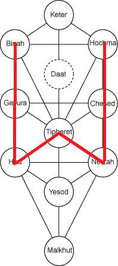 |
Solution for FF4Helping Rosa | ||
Cluing words ----------------- King Crown |
Sephirot --------- Malchut Keter |
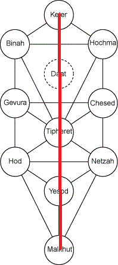 |
Solution for FF5Into the Void | ||
Cluing words ----------------- Foundations Victorious Beautiful Kind |
Sephirot --------- Yesod Netzach Tiferet Chesed |
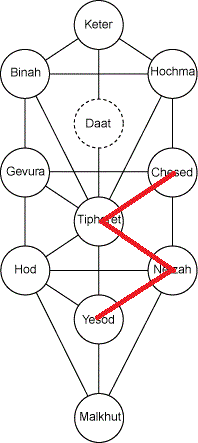 |
Solution for FF6Returners | ||
Cluing words ----------------- Victory Wise(-guy) Kind Strong Understand Majesty |
Sephirot --------- Netzach Hochma Chesed Gevurah Binah Hod |
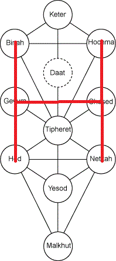 |
Solution for FF7Of Meteors and Materia | ||
Cluing words ----------------- Victor Wisdom Kindly Strong Understood Majesty |
Sephirot --------- Netzach Hochma Chesed Gevurah Binah Hod |
|
Solution for FF8Time Compression | ||
Cluing words ----------------- Kind Beautiful Strong Understands, Understand Crowning Wisdom Kindness |
Sephirot --------- Chesed Tiferet Gevurah Binah Keter Hochmah Chesed |
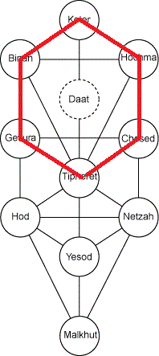 |
Solution for FF9Hunt Festival | ||
Cluing words ----------------- Understand Strong Majestic Victorious |
Sephirot --------- Binah Gevurah Hod Netzach |
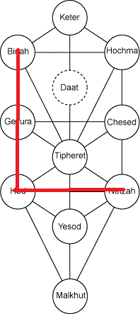 |
Solution for FF10Sin Comes to Spira | ||
Cluing words ----------------- Beauty Understand Beauty King Beautiful Wise |
Sephirot --------- Tiferet Binah Tiferet Malchut Tiferet Hochma |
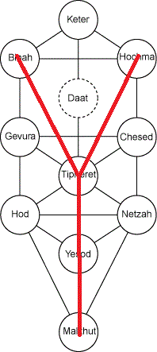 |
Solution for FF11Bastok Republic | ||
Cluing words ----------------- Beautiful Crown Wisest Crown Understand |
Sephirot --------- Tiferet Keter Hokhmah Keter Binah |
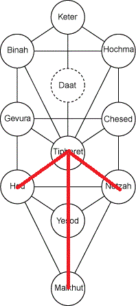 |
Solution for FF12Ordalian Plains | ||
Cluing words ----------------- Kind Strong Understand Wisdom Understand Majesty Victory |
Sephirot --------- Chesed Gevurah Binah Hochma Binah Hod Netzach |
|
Solution for FF13Outside of the Cocoon | ||
Cluing words ----------------- Majestic Kind Beautiful Victory Strength |
Sephirot --------- Hod Chesed Tiferet Netzach Gevurah |
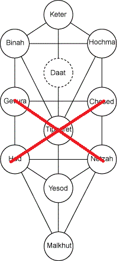 |
Solution for FF14Keeping It Real in Eorzea | ||
Cluing words ----------------- King Beautiful Majestically Beautiful Victories |
Sephirot --------- Malchut Tiferet Hod Tiferet Netzach |
|